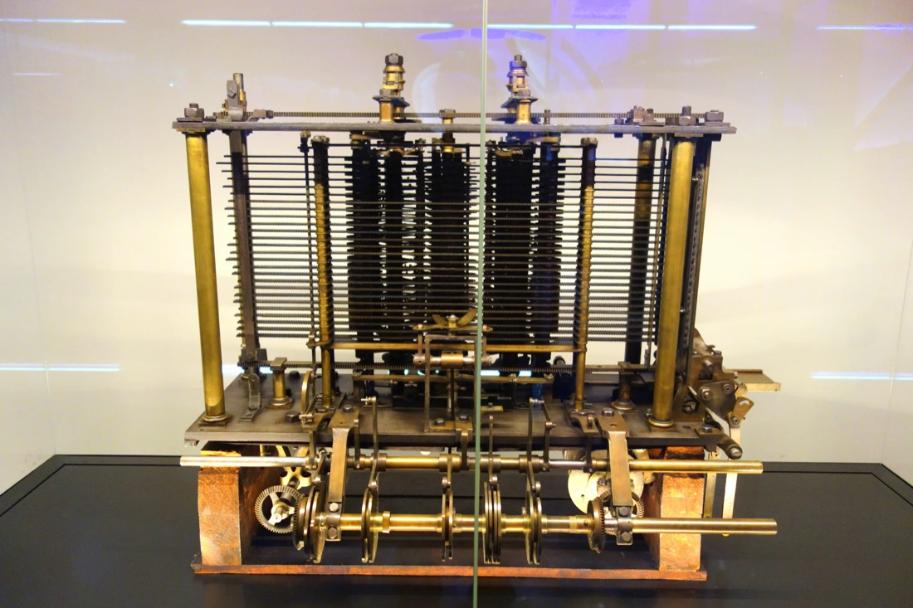
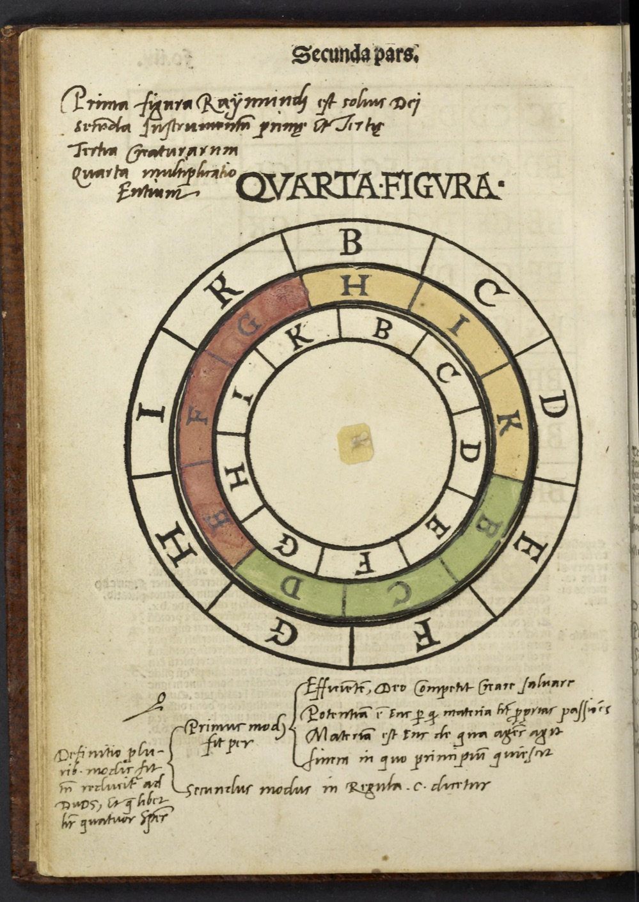
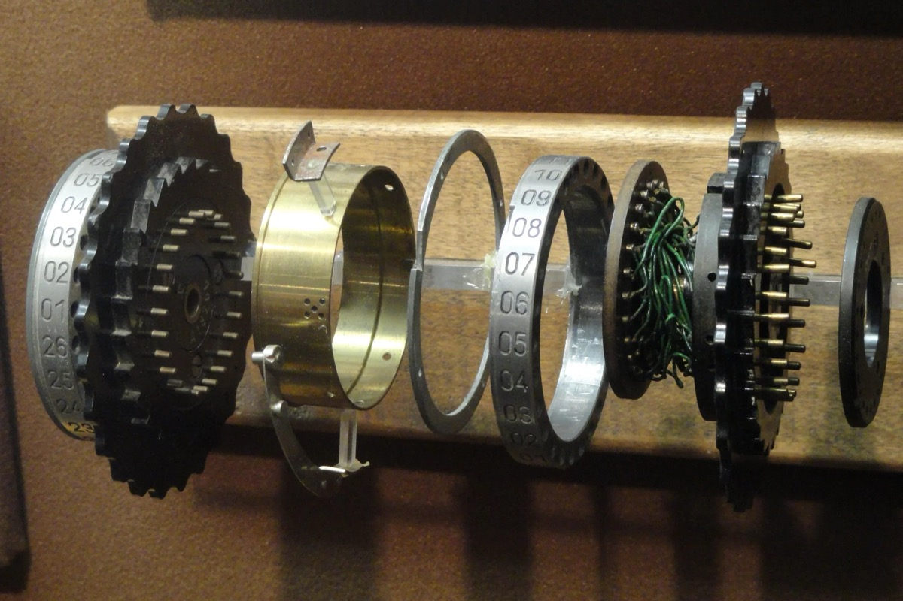
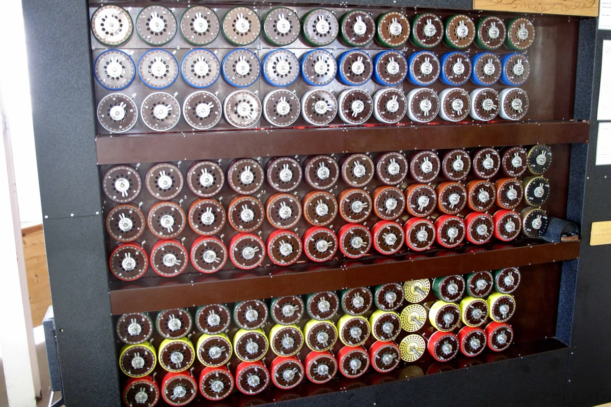
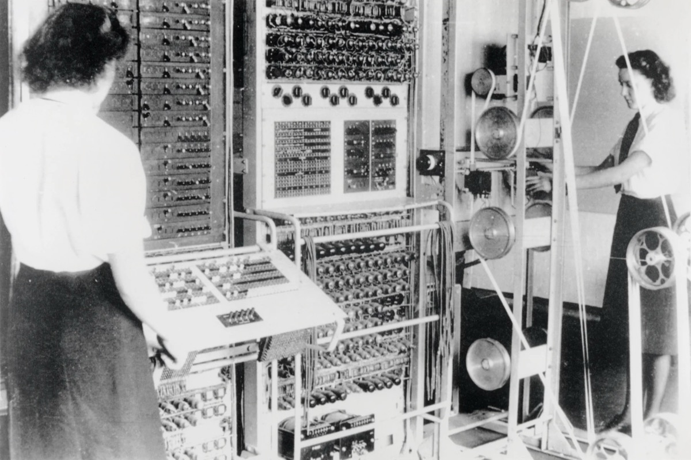
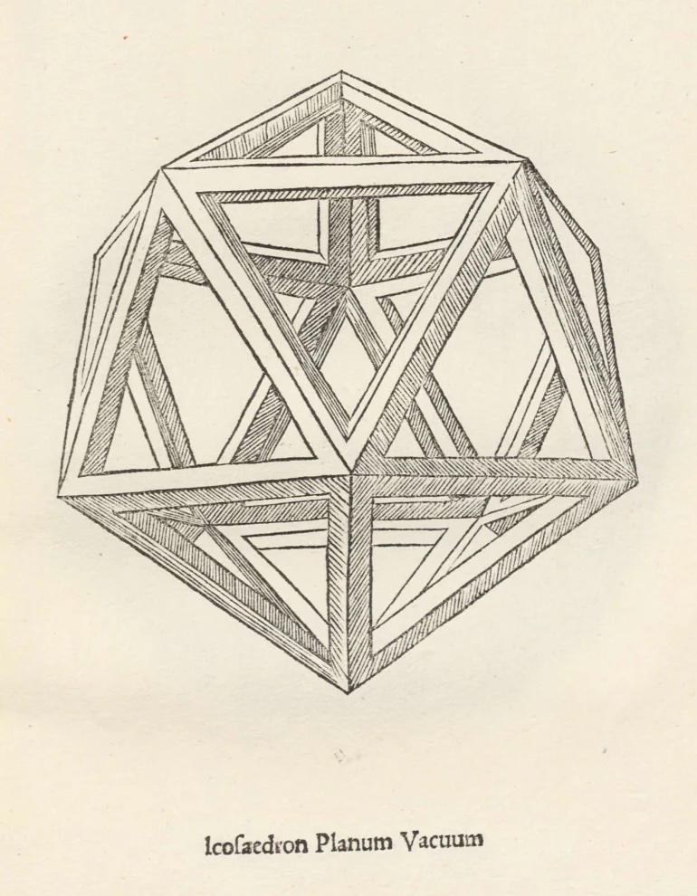

… by the word operation, we mean any process which alters the mutual relation of two or more things, be this relation of what kind it may. This is the most general definition, and would include all subjects in the universe.
In 1843 Ada Lovelace published her translation of an article on Charles Babbage’s Analytical Engine, a mechanical computer first described in 1837 and never completed. She added seven notes of her own, lettered A to G. The last of them contains a table of operations for computing the Bernoulli numbers, often called the first published computer program. The first contains the idea this essay is about: the engine separates the operations from the objects they operate on.
Mathematics has a name for what she described. A set of operations that can be performed one after another, and that includes the operation of doing nothing, is a monoid. When every operation can also be undone, it is a group. Every program, on any machine, gives a monoid acting on that machine’s states.
In this essay I explain what that means and why it is useful. The monoid of a program contains groups. What mathematicians have learned about groups then tells us what the program can compute, what it is made of, and what another machine must keep in order to do the same job.
Lovelace separated the operations from the numbers

The Analytical Engine had two main parts. The store held numbers on columns of wheels, and the mill did the arithmetic. Punched cards, borrowed from the Jacquard loom, told the engine what to do. Operation cards said which operation the mill should perform. Variable cards said which columns of the store should supply the numbers and which should receive the result.
In her first note Lovelace drew the consequence. In the engine, she wrote, “the peculiar and independent nature of the considerations which in all mathematical analysis belong to operations, as distinguished from the objects operated upon and from the results … is very strikingly defined and separated.” A deck of operation cards is a thing in itself. It can be studied, repeated and combined before anyone says which numbers it will meet. She called this study “the science of operations” and claimed for it “its own abstract truth and value.”
A deck of operation cards is a thing in itself.
Two more points in the notes belong to the same idea. Operations need not act on numbers. The engine “weaves algebraical patterns just as the Jacquard-loom weaves flowers and leaves,” and if the relations of musical harmony could be expressed in its terms, it “might compose elaborate and scientific pieces of music of any degree of complexity or extent.”
A group of operations can also be used again. The cards could be “backed,” so that the same cards came round a second time, and Lovelace gave the result a name: “a recurring group is called a cycle.” Her program for the Bernoulli numbers uses twenty-five operation cards, and operations 13 to 23 are repeated once more for each further number. A cycle can itself be repeated, which gives “a cycle of a cycle, or a cycle of cycles.”
Swipe sideways to read the figure

Operations performed in sequence form a monoid
Here is the modern statement. Call the complete condition of a machine its state. For the engine, that is the position of every wheel on every column. An operation is a rule that takes each possible state to a new state. Performing one operation and then another is again a rule that takes each state to a new state, so it is an operation too.
The grouping of a sequence does not matter. Doing a, then b, then c gives the same result whether we think of it as a-then-b followed by c, or as a followed by b-then-c. And there is an operation that changes nothing.
A set of operations with these properties is a monoid. The states are a separate set, and the monoid acts on them. Lovelace’s separation of operations from objects is the separation of the monoid from the set it acts on.
A program fits this description at two levels. A program with no branches is a list of instructions, and running it performs their operations in order. The program is a word, and what it does to the state is the product of its letters. Many words give the same product, which is how two different programs can compute the same thing: “add 2, then add 3” and “add 5” are different programs and the same operation. A loop is a power. Lovelace’s cycle, performed n times, is the operation of the cycle multiplied by itself n times.
When a program branches, the next instruction depends on the state, and the list is no longer fixed in advance. Then we take the whole machine, with the program and the current position in it, as the thing that has a state. One step of the machine is one operation. If the machine also receives inputs from outside, each possible input is an operation of its own, and the operations that finite sequences of inputs can produce form the machine’s monoid. In our paper on brain simulation we call it the update monoid.
The same holds when time is continuous. For a system that obeys a differential equation that does not change with time and has one solution from each starting state, evolving for one duration and then for another is the same as evolving for their sum. The evolutions form a monoid too, with durations in place of counted steps.
None of this is special to computers. A counterpart of Cayley’s theorem for groups gives the converse: every monoid, however abstractly it is defined, is the monoid of some set of operations on some set of states. Whether a physical machine can carry out those operations is a separate matter.
Reversible operations form groups, and overwriting forgets
Operations differ in one decisive respect. Some can be undone. Adding 1 on a twelve-hour clock face is undone by adding 11. Swapping the contents of two registers is undone by swapping them again. An operation that can be undone rearranges the states without merging any two of them, and a set of such operations that contains their combinations and their inverses is a group.
Other operations cannot be undone. “Set the register to zero” sends every state to the same place, and afterward nothing in the register says where it started. Overwriting is how a machine takes in news from outside. It is also the reason the algebra of computation is a monoid and, in general, not a group.
A compass shows both kinds at once. Suppose a small device keeps track of which way it is facing, to the nearest quarter turn: north, east, south or west. It can be told “you have turned right,” and then it moves its record one place round the dial. It can also sight a landmark and be told “you are facing north,” and then it sets its record to north, whatever it held before.
The four turns (none, right, about, left) form a group, the rotations of a square. The four observations are overwrites. Combining them in every possible way gives nothing new. A turn after an observation is an observation, and so is an observation after a turn. These eight operations are the whole monoid of the device.
The group inside a monoid is the part of the computation that forgets nothing.
Rolf Landauer found the physical meaning of the difference in 1961. An operation that merges states erases information, and erasing one bit costs at least a fixed amount of energy, proportional to the temperature. Charles Bennett showed in 1973 that a computation can be arranged so that every step is reversible, and that reversible steps escape this cost in principle. The group inside a monoid is the part of the computation that forgets nothing.
A familiar toy makes the group vivid. Every sequence of turns of a Rubik’s cube is a program, and two sequences that leave the cube in the same arrangement are the same operation. All of them can be undone, so they form a group. It has 43,252,003,274,489,856,000 elements, and in 2010 a computer-assisted proof showed that every one of them can be reached in twenty face turns or fewer. Solvers use the algebra without naming it. Many of the sequences they use to move a few pieces and leave the rest in place are commutators: do a, do b, undo a, undo b.
A turning wheel is a group in action

Machines made of wheels put groups to work long before groups had a name. Around 1300 the Majorcan philosopher Ramon Llull devised an Art for reasoning by combination. Nine letters stand for basic concepts, and concentric discs carrying the letters are turned against one another to form their combinations. A turn is an operation, the same whatever the letters mean, and nine turns bring a disc back to where it began. Leibniz took his inspiration from Llull for his dissertation of 1666 on the art of combinations.
The Enigma cipher machine added wiring to the wheels. Each rotor is a wired drum that sends every letter to a letter, a fixed rearrangement of the alphabet. The rotors turn as the keys are pressed, so each letter of a message meets a different rearrangement. In late 1932 the Polish mathematician Marian Rejewski reconstructed the wiring of the rotors without having seen the machine, and then found a way to recover the daily settings. His tools were theorems about rearrangements. One of them says that relabeling the letters does not change the lengths of the cycles into which a rearrangement falls. The machine’s plugboard swapped pairs of letters and could be set in about a hundred billion ways. It was only a relabeling, so the cycle lengths passed through it unchanged and gave the rotor settings away. The theorem about cycles has been called “the theorem that won World War II.”
The codebreaking machines were wheels as well. The British Bombe, designed by Alan Turing in 1939 after a Polish original, was a bank of rotating drums, each imitating one rotor. Colossus, working by the end of 1943 against a cipher machine with twelve wheels, produced the wheel patterns electronically. The wheels had become states of a circuit.



A group is studied by taking it apart
Mathematicians come at a group from several sides. They ask what it acts on: which states can be reached from which, and what every operation leaves unchanged. They ask how it is generated: which few operations produce all the others, and which sequences of them give the same result. They turn its operations into matrices, so that linear algebra applies. And they take it apart.
Taking apart rests on one move. Sometimes part of what a group does can be ignored consistently. Take the counter that steps round a clock face of twelve hours, and keep only whether the hour is even or odd. What remains is a smaller group, a counter of two. The operations that were ignored, the steps by an even number of hours, form a group as well, a counter of six. The counter of twelve has come apart into a counter of two and a counter of six, and the counter of six comes apart again into two and three.
A group that cannot be divided in this way is called simple. Every finite group comes apart into simple pieces, and a theorem of Camille Jordan and Otto Hölder says that the list of pieces is the same however the dividing is done. The pieces are to a group what prime factors are to a whole number, with one difference. They do not fix the group: a counter of four and a pair of independent counters of two both come apart into two counters of two. How the pieces are joined matters as well.
The simple pieces are all known. They are the counters with a prime number of positions, the even rearrangements of five or more objects (those that can be made with an even number of swaps), sixteen further families that come from matrices, and twenty-six exceptions. The proof that the list is complete fills tens of thousands of pages, written by about a hundred authors and published mostly between 1955 and 2004.
A group whose pieces are all counters is called solvable. The smallest piece that is not a counter has sixty operations. It consists of the even rearrangements of five objects, and it is also the group of rotations of an icosahedron, the solid with twenty triangular faces.
The Rubik’s cube shows the procedure at full size. Its group comes apart into seven counters of three, twelve counters of two, and two large pieces that cannot be divided: the even rearrangements of the eight corner pieces and of the twelve edge pieces. A computer can work this out from the six face turns alone. The method goes back to an algorithm of Charles Sims from 1970, which takes any set of reversible operations on finitely many states and returns the size of the group they generate, with a test for whether a given operation belongs to it.
An equation has a formula when its group comes apart into counters
This way of taking a group apart was invented to settle a question about formulas. An equation of degree two is solved with one square root. In the sixteenth century Italian algebraists found formulas for degrees three and four, with square roots and cube roots. For degree five none was found. Paolo Ruffini argued in 1799, and Niels Abel proved in 1824, that none exists.
Évariste Galois found the reason. His memoir of 1831 was published only in 1846, fourteen years after his death. He attached a group to each equation. The roots of an equation cannot always be told apart by arithmetic. Whatever can be said about the number i using whole numbers, sums and products is equally true of −i: both are square roots of −1, and nothing in the arithmetic prefers one of them. The rearrangements of the roots that preserve every such statement form the group of the equation.
A formula in roots is a program, a fixed list of additions, multiplications, divisions and root extractions. Each root extraction adds counters to the group and nothing else. Galois showed that an equation can be solved by such a program exactly when its group is solvable, that is, when it comes apart into counters.
Take the general equation of each degree, whose group contains every rearrangement of the roots. For three roots the group has six operations and comes apart into a counter of two and a counter of three, and the formula for the cubic takes a square root and then a cube root. For four roots the pieces are counters of two, three, two and two. For five roots the group has 120 operations and comes apart into a counter of two and the indivisible piece of sixty. No root extraction supplies that piece, so the general equation of degree five has no formula in roots. Particular equations of degree five with smaller groups can still be solved.
A new primitive extends what composition can reach
The result is usually told as a story of impossibility. In an earlier note on Galois theory I read it as a statement about a toolkit, and put it in three words: solvability is decomposability. The five roots exist and can be computed to any accuracy. What fails is one instruction set. Root extractions add counters, so programs written with them reach only the solvable groups.
Solvability is decomposability.

The remedy is a new instruction. Erland Bring showed in the eighteenth century that every equation of degree five can be reduced to the form x5 + x + a = 0. Give the solution of that one equation a name, as a function of a, and every equation of degree five is solved with roots and the new function. In 1858 Charles Hermite solved the general equation with elliptic functions, and Felix Klein later rebuilt the solution on the rotations of the icosahedron, the same sixty operations that defeat the roots. The new tool works because it carries the symmetry that the old ones lack.
Differential equations follow the same pattern. A linear differential equation has a group too, and it can be solved with integrals, exponentials and algebraic functions exactly when the connected part of that group is solvable. Airy’s equation y″ = xy fails the test. Its solutions have a name of their own, the Airy functions.
In that note I drew the pattern as a staircase. A learner, human or machine, composes the tools it has until progress stalls at a piece that will not come apart. It then adopts a primitive that contains the piece, and composes again. For learning in general this is a proposal. For machines with finitely many states the part about toolkits is a theorem.
Every finite machine factors into groups and flip-flops
Machines come apart as groups do. In 1965 Kenneth Krohn and John Rhodes proved a theorem that does for machines what factorization into primes does for whole numbers. Take any machine with finitely many states. It can be emulated by a chain of simpler machines, each feeding the next and none feeding back, and the links of the chain are of two kinds only.
One kind does nothing but permute its states, and its operations form a simple group, one of the pieces that cannot be divided. The other kind is a flip-flop, a memory with two states and three operations: set, reset, and do nothing. The simple groups that appear all come from the monoid of the original machine: each is a group found among its operations, or a simplified image of one. The theorem never calls for a group from outside.
The chain is more than a list of parts. Each part reads the input and the states of the parts before it, so an earlier part can determine what a later one does next. Two counters of two make a counter of four when the second advances only as the first comes round, and they remain two independent counters when it does not. The decomposition exposes both the algebraic parts of a machine and the way they are coupled.
The theorem also runs the other way, and here the toolkit principle is exact. For every simple group that comes from the machine’s monoid in this sense, some part of any chain that emulates the machine must contain a group that maps onto it. Parts that lack such a group cannot make up for it, however many are chained: counters of two and flip-flops will never reproduce a cycle of three. With counters of every size and flip-flops, a chain can emulate a machine exactly when every group in the machine’s monoid is solvable. When one of them is not, at least one part must supply a piece that is no counter, such as the sixty rotations of the icosahedron. This is the counterpart for machines of Galois’s criterion for equations. The restriction to chains matters: with feedback, a flip-flop that reads its own state can toggle.
Group theory therefore supplies the parts list for finite computation. The finite simple groups play the part of the primes, and the flip-flops supply memory and contribute no group beyond the trivial one. For small machines the decomposition can be computed today: the SgpDec package for the GAP computer algebra system takes a machine’s operations and returns a chain of this kind, whose groups may themselves come apart further.
The groups a program contains limit what it can compute
The parts list has consequences. Consider machines that read a string of letters and answer yes or no. In 1965 Marcel-Paul Schützenberger characterized the machines whose monoid contains no group except the trivial one. They recognize exactly the languages that can be written with unions, complements and concatenations, and without the operator that says “repeat any number of times.” One thing they cannot do is count in cycles. Deciding whether a string of a’s has even length needs the group with two elements, and no feed-forward chain of flip-flops can stand in for it.
The kind of group matters as well, and the dividing line is the one Galois drew. In 1989 David Barrington showed how much it can matter. Give a program a memory with only five possible states, and let each step read one bit of the input and, depending on that bit, apply one of two rearrangements of the five states. Programs of this kind whose length grows only polynomially with the input can compute everything that Boolean formulas of polynomial size can, including the majority vote of the input bits.
The proof turns on the fact that defeats the formula for the equation of degree five: the rearrangements of five objects contain the indivisible piece of sixty. Barrington’s device is the cube solver’s commutator: do a, do b, undo a, undo b. Let the program perform a and its undoing only when one input bit is set, and b and its undoing only when another is. The four steps then change the state only when both bits are set, so they compute the AND of the two bits. To combine two such results the program takes the commutator of two commutators, and so on up the formula. In a solvable group this nesting dies out: beyond a fixed depth, every commutator of commutators is the operation that does nothing. Barrington chose cycles of five objects whose commutator is again a cycle of five, so the device can be nested as deep as a formula requires. With a solvable group in its place, such programs fall into a class that is conjectured, and not yet proved, to be unable to compute even the majority vote. The structure of the group sets the power of the program.
A program that tracks a symmetric world contains the world’s group
This is where the algebra meets our own work. In Kolmogorov Theory an agent is a system that keeps a model of its world and uses it. A model has to keep up with the world, and worlds have symmetries. A body turns, an object moves, a scene shifts, and one rule describes the change wherever it starts.
In a recent paper we spell out what such tracking demands of the tracker, building on the classical theory of automata. Take a system that exactly tracks a world whose configurations are changed by a group of transformations, that can also observe the world and overwrite its record, and that has no other inputs. At the coarsest description that still keeps the record, its update monoid consists of two things only: the world’s group, acting reversibly on the record, and the overwrites. The compass is one example.
Now suppose another machine imitates the tracker, as a simulation imitates a brain. If it has finitely many states and reproduces the tracker’s record exactly, its own monoid must contain a group that maps onto the world’s group. Memory alone cannot supply the symmetry: a chain of flip-flops with no feedback contains no group beyond the trivial one. We show that the same holds for an imitation that is accurate enough. Take the compass and any finite machine whose heading error stays below 45 degrees, half the gap between neighboring headings, after every sequence of turns and observations. That machine must carry the four-fold rotation in its own operations.
Memory alone cannot supply the symmetry.
When the symmetry is continuous, like a rotation by any angle, the group is infinite, and no machine with finitely many states can keep it exactly. It can only approximate it.
Nature appears to build such trackers. In the fruit fly’s brain a heading signal follows the animal’s turns in darkness and realigns when a visual landmark shifts. In the terms of this essay, a turn is a rotation of the record and a landmark correction is an overwrite.
Group theory says what to look for in a learned program
The same reasoning helps with programs that nobody wrote. A trained neural network is a program whose instructions are spread over millions of numbers. In 2023 Neel Nanda and colleagues trained small networks to add numbers on a clock face and then took them apart. The networks had found the rotations. They turned each number into an angle and added by composing rotations, using trigonometric identities to do it.
A companion study trained networks on other finite groups. It found that they learn to compose group elements through the group’s representations, the standard device by which mathematicians turn group elements into matrices, although which representations a given network uses varies from one training run to the next. Knowing the group told the investigators what structure to look for, and they found it.
The line between solvable and not appears in learned programs too. In 2022 Bingbin Liu and colleagues asked how many layers a transformer, the kind of network behind today’s language models, needs in order to follow a finite machine through a long input. Using the theorem of Krohn and Rhodes, they showed that when the machine’s groups are solvable a fixed number of layers is enough for inputs of any length, with layers that may widen as the inputs grow. When they are not, the number of layers must grow with the input for networks of practical size and precision, unless a long-standing conjecture of complexity theory is false.
The operations are what a copy must keep
Lovelace’s separation has a practical reading today. When we ask whether two systems do the same thing (two programs, a program and its compiled form, a brain and its emulation) the states are the wrong place to look, because they can be encoded in endlessly many ways. The operations, and the way they compose, are what the systems can share.
That is the role of the update monoid in our paper. Emulators that reproduce a system exactly reproduce the same operations on the states being compared, even when their algorithms and mechanisms differ. For machines with finitely many states, the groups inside the monoid are the part that no change of encoding can remove.
The science of operations that Lovelace announced in 1843 now has two centuries of group theory behind it. To find the mathematical structure in a program, find its operations, see how they compose, look for the groups, and take them apart.